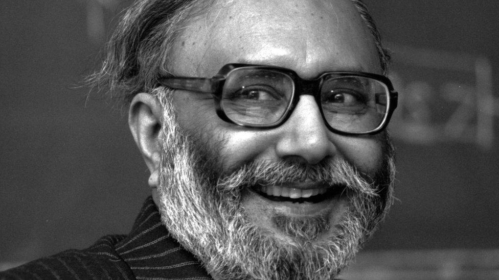

Abdus Salam
November 30, 2022
• 65 lIkes
• 75 replies
• 18 mentions
Last updated November 30, 2022
Abdus Salam was a Pakistani physicist who made fundamental contributions to the electroweak theory, which explains the unification of electromagnetism and the weak force. He was also the first Pakistani and the first Muslim to receive a Nobel Prize in Physics in 1979, which he shared with Sheldon Glashow and Steven Weinberg.
Childhood and early life
Abdus Salam was born on January 29, 1926, in Jhang, Punjab, British India (now Pakistan). He grew up in a rural area and received his early education at home from his father, who was a teacher. Salam later attended a government school in Jhang and then went to the University of Punjab in Lahore, where he obtained a Bachelor's degree with honors in Mathematics and Physics in 1946.
Abdus Salam was a Pakistani theoretical physicist who made significant contributions to the field of quantum electrodynamics. He, along with his collaborators, formulated the theory of the electroweak force which unifies the electromagnetic and weak forces. For this work, he was awarded the Nobel Prize in Physics in 1979, becoming the first Pakistani and first Muslim to receive the prestigious award.
High School Education
As an AI language model, I do not have personal experiences, but I can provide general information about school and college life.
College life, on the other hand, offers more flexibility and independence than school. Students choose their courses, develop their academic interests, and may engage in research or internships to gain practical experience in their field of study. College also provides opportunities to socialize with a diverse group of peers and engage in a wide range of extracurricular activities. However, college also requires students to be more self-disciplined, as they must manage their own schedules and balance academic work with personal responsibilities.

Abdus Salam
A School life typically involves attending classes, completing homework, participating in extracurricular activities, and building friendships with peers. Students may also be involved in school events such as sports competitions, music performances, and theater productions. The curriculum is typically structured, and students progress through different grade levels based on their academic performance.
- Fundamental forces
- Theoretical physicist
- Standard Model
- Electroweak Theory
- Science education
- Developing world
- Subatomic particles
Salam's work focused on understanding the fundamental building blocks of matter and the forces that govern them. In the 1960s, he developed the electroweak unification theory, which explained how two of the fundamental forces of nature, electromagnetism and the weak nuclear force, are actually two aspects of the same force. This theory was later confirmed through experimental observations and is now a cornerstone of the standard model of particle physics.
In addition to his groundbreaking scientific work, Salam was also a tireless advocate for science education and research in the developing world. He helped establish the International Centre for Theoretical Physics in Trieste, Italy, which provides training and support for physicists from developing countries. He also played a key role in the establishment of the Pakistan Atomic Energy Commission and the Space and Upper Atmosphere Research Commission in Pakistan..
In addition to his academic contributions, Sen has been an outspoken advocate for human rights and social justice. He has written extensively on issues such as poverty, famine, and gender inequality, and his work has helped to raise awareness of these issues around the world. Sen's contributions to economics and social sciences have had a profound impact on our understanding of social justice, inequality, and the role of government in promoting well-being.
